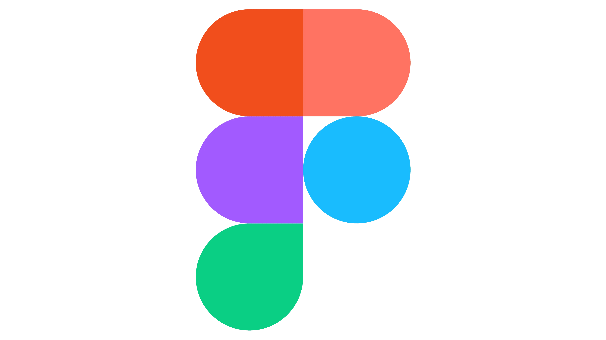
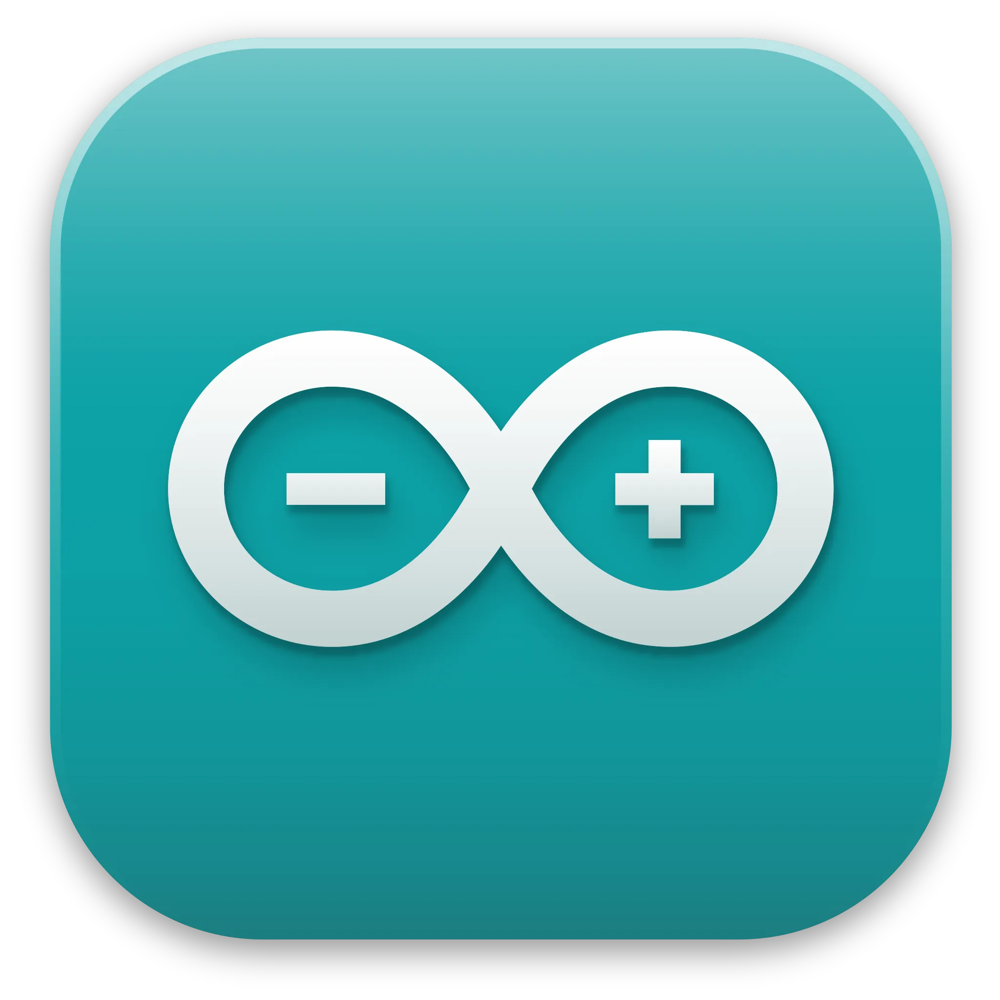

Hello! I'm Annika, an Interaction Designer based in Ireland.
My core interests are in the intersection of digital fabrication and creative coding. My work involves interactive programming, prototyping, and crafting engaging screen-based content. I approach every project with curiosity, creativity, and a hands-on drive, aiming to design thoughtful, tech-driven solutions that make a real impact.
Design Statement
My background is shaped by a dual appreciation for technical precision and human-centred storytelling. During my time at the University of Limerick, I have developed a multidisciplinary toolkit that spans from soldering circuits and hardware prototyping to UI/UX design in Figma. I view these skills as interconnected ways to answer a central question: how can we use emerging technology to create experiences that are both functional and deeply human?
I am motivated by the challenge of taking complex systems and making them accessible. My projects, such as the Live Bus Timetable and the Tangible Smart Replica for museum engagement, reflect my commitment to "making it real early." I value rapid prototyping and iterative testing, as I would much rather refine a working physical model than perfect a static screen that lacks a human connection.
As a designer, I prioritise honesty, accessibility, and purpose. My experience as a Peer Advisor and Team Lead has shown me the importance of keeping the user in the loop at every stage. I believe that the best solutions come from a willingness to experiment, a drive to improve existing systems, and a commitment to creating a genuine social impact.
My Toolkit

